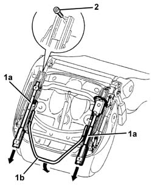
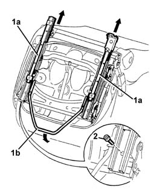
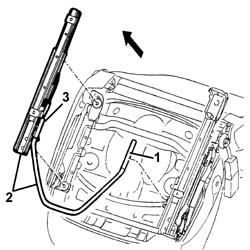
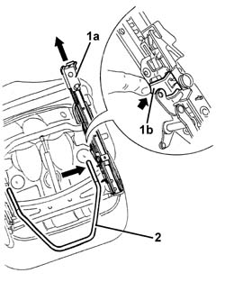
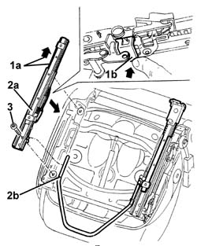
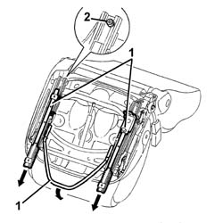
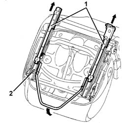

7045A29 SEAT SLIDE CONTROL LEVER - R R
- Path
- Procedures > 70 FITTINGS > 7045 FRONT SEATS > 7045A FRONT SEAT ASSEMBLY > 7045A29 SEAT SLIDE CONTROL LEVER - R R
- Kind
- repair procedure (removal / refitting; the operation number is the code)
- Applies to
- all engines; all production periods
- Interactive page
- https://sloeber94.github.io/elrnDB-aGt/en/#/125001903
Applies to: all engines; all production periods
 Removing
Removing
 Refitting
RefittingOp. 7045A10 L/H OR R/H FRONT SEAT (ONE) - R+R
1. Move the guides (1a) forwards by operating the slide control lever (1b).
2. Undo the rear outer guide bolt.

Applies to: all engines; all production periods
1. Move the guides (1a) backwards by operating the slide control lever (1b).
2. Undo the front guide bolt.

Applies to: all engines; all production periods
1. Disconnect the slide control lever from the inner guide.
2. Remove the guide with slide control lever.
3. Disconnect the slide control lever from the outer guide.

Applies to: all engines; all production periods
Refitting
RemovingCheck that the slide control lever is undamaged.
1. Move guide (1a) back to the end of its travel by hand by means of key (1b).
2. Insert the slide control lever in its seat and engage.

Applies to: all engines; all production periods
1. Move outer guide (1a) to the end of its travel by hand by means of key (1b).
2. Fit outer guide (2a) and engage slide control lever (2b).
3. Fit the front bolt without tightening.
 | Fastening | Component | Ø | Value (daNm) |
|---|---|---|---|---|
- | Bolt | FRONT SEAT GUIDE. | M8 | 2.4 |

Applies to: all engines; all production periods
1. Move the guides forwards, operating the slide control lever.
2. Screw in and tighten the rear bolt.
| Fastening | Component | Ø | Value (daNm) |
|---|---|---|---|---|
- | Bolt | FRONT SEAT GUIDE. | M8 | 2.4 |

Applies to: all engines; all production periods
1. Move the guides backwards, operating the slide control lever.
2. Tighten the front bolt.

Applies to: all engines; all production periods
Test the guides are working properly. In particular, check the guides are aligned by moving them around to different positions using the control lever and then checking the keys of both guides engage simultaneously.